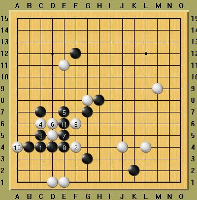
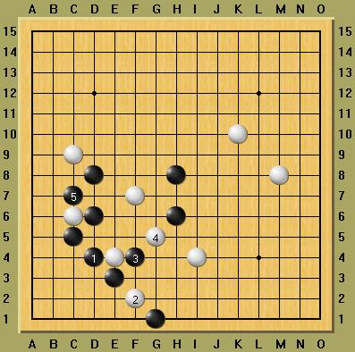

VCF习题 （黑先）
首页
五子棋交流
#1 VCF习题 （黑先） 作者：飞翔 发表时间：2006-2-26 10:10:00
第一题
#2 Re:VCF习题 （黑先） 作者：飞翔 发表时间：2006-2-26 10:13:56
第二题
#3 好招 作者：谷家相 发表时间：2006-3-1 8:28:30
叼！
你这招太毒了，好招术，佩服佩服呀，有空教我个一招半式。
#4 Re:VCF习题 （黑先） 作者：飞翔 发表时间：2006-3-8 13:10:33
第一题答案[hf]
[/hf]
#5 Re:VCF习题 （黑先） 作者：飞翔 发表时间：2006-3-8 13:20:17
第二题答案[hf]
[/hf]
#6 Re:VCF习题 （黑先） 作者：fengye 发表时间：2006-3-13 20:41:36
xuexue
#7 Re:VCF习题 （黑先） 作者：学习ing 发表时间：2006-3-14 15:40:06
看看
#8 Re:VCF习题 （黑先） 作者：caplit 发表时间：2006-3-15 11:15:09
不会啊\
#9 Re:VCF习题 （黑先） 作者：zhang1988 发表时间：2006-3-15 20:59:40
想看
#10 Re:VCF习题 （黑先） 作者：taoxue 发表时间：2006-3-16 9:45:59
看不到图啊
#11 Re:VCF习题 （黑先） 作者：初学者451 发表时间：2006-3-22 8:19:50
学习学习.
#12 Re:VCF习题 （黑先） 作者：qq4114 发表时间：2006-4-6 10:39:08
学习
#13 Re:VCF习题 （黑先） 作者：晕晕男人 发表时间：2006-7-17 3:28:17
了； 就
#14 Re:VCF习题 （黑先） 作者：455 发表时间：2006-7-19 9:25:59
o
#15 Re:VCF习题 （黑先） 作者：天涯游子 发表时间：2006-7-24 16:55:17
看看
#16 Re:VCF习题 （黑先） 作者：天涯游子 发表时间：2006-7-24 17:07:24
飞翔,第一题好象还另有解,我做出答案跟你的不一样,你看到回贴跟我联系一下,我们交流交流
#17 Re:VCF习题 （黑先） 作者：wu1138 发表时间：2006-7-31 22:17:32
hao好啊！~~看看
#18 Re:VCF习题 （黑先） 作者：黄太子 发表时间：2006-8-2 14:31:46
ddddddddddddddddddddddddddddd
#19 Re:VCF习题 （黑先） 作者：xialin 发表时间：2006-8-4 18:04:33
看看答案
#20 Re:VCF习题 （黑先） 作者：小西贝 发表时间：2006-8-8 23:25:44
不知道
#21 Re:VCF习题 （黑先） 作者：弗雷德里希 发表时间：2006-8-9 13:26:38
想看看
#22 Re:VCF习题 （黑先） 作者：熊猫咪咪 发表时间：2006-8-10 9:07:04
好局，请教
#23 Re:VCF习题 （黑先） 作者：三眼蟹 发表时间：2006-8-16 21:55:19
谢谢
#24 Re:VCF习题 （黑先） 作者：听雪 发表时间：2006-8-27 11:17:35
很想学!
#25 Re:VCF习题 （黑先） 作者：liyach 发表时间：2006-8-29 0:20:34
#26 Re:VCF习题 （黑先） 作者：zzp197 发表时间：2006-8-31 20:43:06
看看
#27 Re:Re:VCF习题 （黑先） 作者：蚯蚓降龙 发表时间：2006-9-1 9:38:50
嗯 '哦 深奥
#28 Re:Re:VCF习题 （黑先） 作者：蚯蚓降龙 发表时间：2006-9-1 10:39:30
不错 有启发 谢谢
#29 Re:VCF习题 （黑先） 作者：浩楠 发表时间：2006-9-16 13:37:16
顶啦
#30 Re:VCF习题 （黑先） 作者：杨华明 发表时间：2006-9-23 7:41:16
看看
#31 Re:VCF习题 （黑先） 作者：冰河 发表时间：2006-10-4 7:35:53

#32 Re:VCF习题 （黑先） 作者：好累 发表时间：2006-10-5 16:43:02
看第一题答案
#33 Re:VCF习题 （黑先） 作者：623193 发表时间：2006-12-10 21:17:18
第一题76步后胜！
#34 Re:Re:VCF习题 （黑先） 作者：沉默督察 发表时间：2006-12-10 21:52:00
看看
#35 Re:VCF习题 （黑先） 作者：zanlin 发表时间：2006-12-11 1:40:49
好强啊
#36 Re:VCF习题 （黑先） 作者：17号蓝星仔 发表时间：2006-12-15 2:56:42
kankan
#37 Re:VCF习题 （黑先） 作者：luobo 发表时间：2006-12-15 9:14:28
kjkjhj
#38 Re:VCF习题 （黑先） 作者：yuelee 发表时间：2006-12-22 11:12:12
飞翔真牛~~~
#39 Re:VCF习题 （黑先） 作者：李逍遥 发表时间：2006-12-22 12:25:54
好
#40 Re:VCF习题 （黑先） 作者：好y玩哦 发表时间：2006-12-27 14:24:33
看吧看吧
#41 Re:VCF习题 （黑先） 作者：llix 发表时间：2006-12-31 9:05:51
我得好好学习一下
#42 Re:VCF习题 （黑先） 作者：Camel 发表时间：2007-1-2 15:11:05
看不到啊
#43 Re:Re:VCF习题 （黑先） 作者：林动奇 发表时间：2007-1-2 18:10:01
佩服，厉害，什么时候才有这水平
#44 Re:VCF习题 （黑先） 作者：anan 发表时间：2007-1-2 22:59:32
学习,刚来这里不久
#45 Re:VCF习题 （黑先） 作者：顺风 发表时间：2007-1-26 9:52:02
看来都是认为第一题比较难啊，第二题很容易解开了。
#46 Re:VCF习题 （黑先） 作者：lilied 发表时间：2007-3-25 9:54:07
第一题一度在第47手出现问题，过了47后就很顺利了
#47 Re:VCF习题 （黑先） 作者：shing 发表时间：2007-3-27 13:08:48
精彩！可惜算不了那么多！能用于实点么？
#48 Re:VCF习题 （黑先） 作者：休闲号 发表时间：2007-4-11 11:28:35
引用：
原文由 飞翔 发表于 2006-2-26 10:10:00 :
第一题
#49 Re:VCF习题 （黑先） 作者：休闲号 发表时间：2007-4-11 11:38:21
感觉这样子比较好。不知道有没反。
随便问一下怎么发可以填的图

#50 Re:Re:VCF习题 （黑先） 作者：休闲号 发表时间：2007-4-11 11:44:00
不知有没反。
#51 Re:VCF习题 （黑先） 作者：fengle 发表时间：2007-6-24 22:49:08
观摩观摩
#52 Re:VCF习题 （黑先） 作者：黄药师 发表时间：2007-7-2 10:56:13
太夸张了！有这么V的吗？
#53 Re:VCF习题 （黑先） 作者：悲剧 发表时间：2007-8-15 20:40:37
怎么看不到啊
#54 Re:VCF习题 （黑先） 作者：拉比 发表时间：2007-8-19 18:16:55
看不到图,怎么回事啊
#55 Re:VCF习题 （黑先） 作者：平淡 发表时间：2007-8-30 17:19:23
我看不到图啊？
#56 Re:VCF习题 （黑先） 作者：王轶 发表时间：2007-9-7 9:58:42
为什么白四手其走那么远？
#57 Re:VCF习题 （黑先） 作者：香水百合. 发表时间：2007-10-13 3:33:11